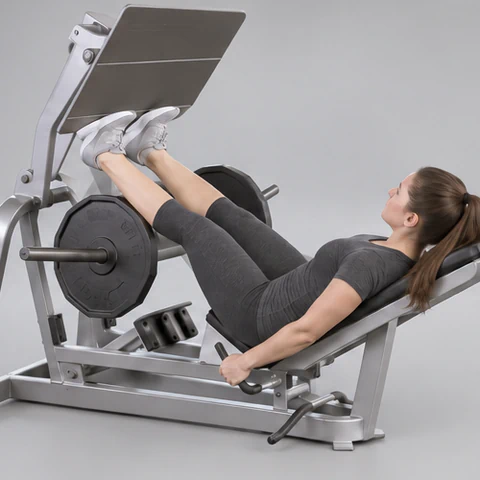
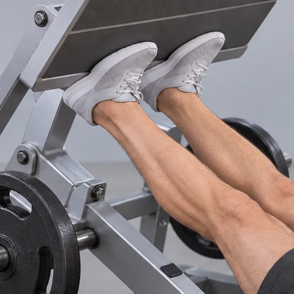
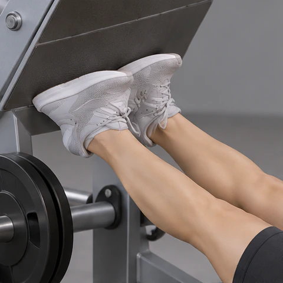
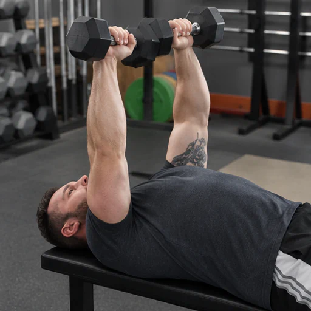
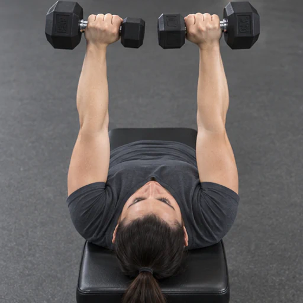
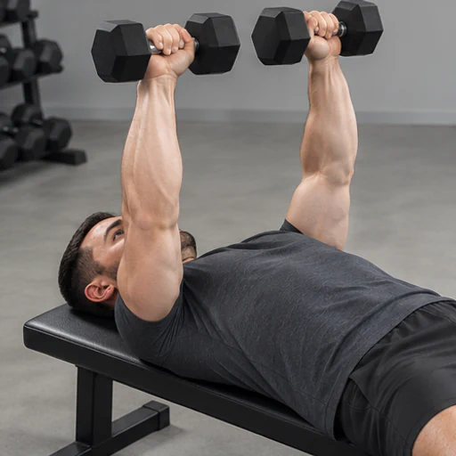

Versión 1 · Mujer
6 fotogramas · 147.3 KB
Tres alternativas por ejercicio · Seis fotogramas por animación

6 fotogramas · 147.3 KB

6 fotogramas · 149.8 KB

6 fotogramas · 143.1 KB

6 fotogramas · 145.4 KB

6 fotogramas · 144.4 KB

6 fotogramas · 140.4 KB